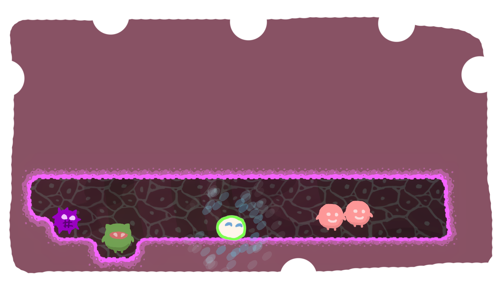
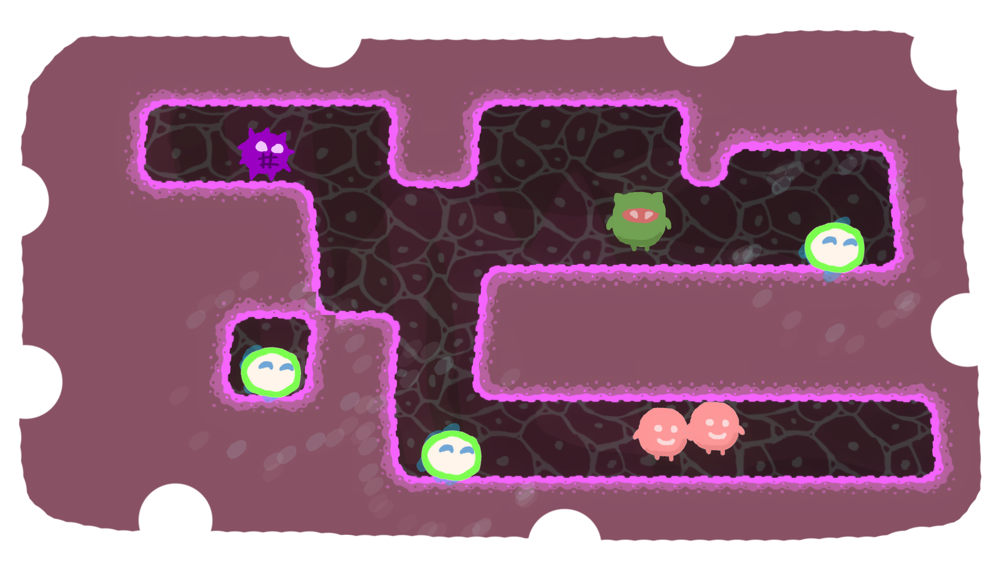
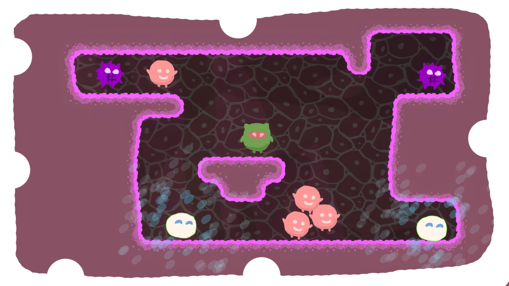
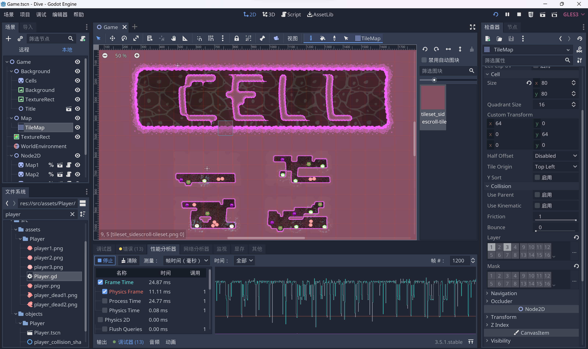

Dive of Cells for G-bits-GameJam-2022
GJ 题目
48小时 GameJam 开发题目：剥离
- 解释：剥离可以是同一整体的分离，也可以是对整体单一部分的聚焦，在整体的系统中发生的剥离往往能够带来新的变化，引发新的效应。同时剥离还象征着同一和矛盾，再发散开来能衍生出对抗、还原、蜕变、多面性……等角度让开发者思考
作品形式
除 VR、AR 以外可运行的游戏 Demo，关卡类游戏不少于 2-3 个关卡，非关卡类游戏需包含游戏核心玩法 5 分钟以上内容。 作品提交内容：
- （1）可运行 demo （2）试玩视频 （3）内容介绍 PPT（请参考模板提交）
作品提交方式
- Demo 提交截止时间：10 月 6 日 12:00 【Demo 提交链接】：https://www.wjx.cn/vm/rol3v6P.aspx#
- PPT + 玩法视频提交截止时间：10 月 6 日 18:00 【PPT + 玩法视频提交】：https://www.wjx.cn/vm/mB4Is2t.aspx#
分两次提交，文件夹命名格式均为：团队名称-队长姓名-成员数量-作品名。
我的游戏

各种链接
在线试玩：Dive of Cell by shaofun (itch.io)
下载地址：Dive of Cell by shaofun (itch.io)
开源地址：HK-SHAO/G-bits-GameJam-2022: 开源仓库 (github.com)
实况视频：https://www.bilibili.com/video/BV18W4y1n7dc/
关键词
- 元胞自动机(Cellular Automata, CA)
- 生命游戏(Conway's Game of Life)
- 细胞分裂和病毒增殖
- 推箱子
玩法：利用浆细胞和抗体清除所有病毒和细菌！
游戏机制
细胞分裂：点击细胞可以分裂出一个新细胞
细胞状态机
- 1
match(cells_num):20: # 细胞挂掉3dead()41: # 一次生成 1 个细胞5generate_new_cell()62: # 一次生成 2 个细胞7generate_new_cell()8generate_new_cell()93: # 生成一个新细胞，老细胞挂掉10generate_new_cell()11dead()12_: # 细胞挂掉13dead()
细胞状态图例
- 根据周围细胞的数量来改变自身状态
- 细胞害怕孤独，当细胞单独存在时它会挂掉
- 细胞讨厌拥挤，周围细胞太多时，细胞也会挂掉
细胞互相吸引
- 细胞喜欢与其他细胞贴贴
- 细胞会自发性的聚集起来
病毒增殖
- 病毒根据细胞状态来选择增殖数量
细菌会直接破坏细胞
浆细胞释放出的抗体可有效破坏病毒和细菌
关卡截图




其他
- 使用 Godot 3.5.1 开发，感谢开源社区 GDQuest，感谢 Godot 官方

制作过程
10.4 中午开始
- 思考题目，看了会儿视频，然后开始做
- 中途两次推倒所有代码和场景，重改玩法
- PS 用鼠标画一点点素材
- 随机生成几段 midi 作为开场音乐
- 做到晚上 9 点之后开始看番，刷视频然后，睡大觉
10.5 感觉没意思
- 应该重构做个 3D 版本的细胞自动机游戏
- 所以思考了半天
- 下午才开始继续做，做了 4 个关卡
- 打包发布
总共其实应该花了 8- 10 个小时左右
哈哈哈，所以这个游戏完全不想做了，因为有更好的 idea 了